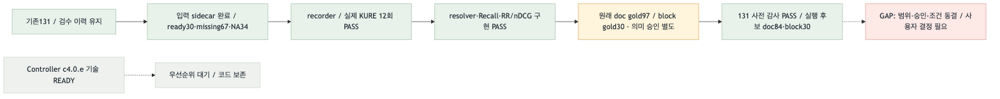

시작 2026-09-05 / 갱신 2026-09-06 · feat/total-integration · local-first · 전체 목표 미완료
기존 Mini131 질문·답변·검수 이력과 baseline은 보존합니다. Controller 전체 구현을 기다리지 않고 검색 비교 준비를 선행합니다.
| 순서 | 작업 | 기존 TODO |
|---|---|---|
| 0 | 큐·소유권·재개 문서 재구성 | 이번 문서 cycle |
| 1 | 기존131 입력·private adapter 완료. 부족한 근거 승인은 잔여 | EH2.EVAL.4.a/b 완료 · .c 잔여 |
| 2 | 기록기·실제 로컬 KURE12회 연결 완료 | EH4.7b.1/b.2 완료 |
| 3 | MRR/nDCG·전체131 사전 감사 완료 → 범위/기준/승인 확정 | EH4.7c.1 · EXP-SELECT.2.a.2.i 완료 / .ii 결정 필요 |
| 4 | page KURE / compat child KURE / child+Kiwi·RRF 비교 | EXP-SELECT.3.a |
| 5 | 실패 원인으로 다음 개선 축 선택 | EXP-SELECT.3.b → EH2/3/4 후속 |
최소 recorder 설정 schema는 2번 전에 정의하고 정식 qrels/threshold 동결은 비교 전에 완료합니다. Controller c4.0.e는 기술 READY·우선순위 대기입니다.

색상: 초록=검증된 경로 · 주황=private/승인 · 빨강=미연결 · 회색=선택·대기. 외부 모델 경로는 이번 범위에 없습니다.
| 대상 | 코드/문서 | 실제 실행·품질 |
|---|---|---|
| 큐·책임·재개 경로 | MATCHED · 기존157개 ID 상태 보존 | 문서 재구성, 성능 점수 아님 |
| resolver·핵심 stage 지표 | MATCHED · 집중/관련112 PASS | 전체131 품질 미실측 |
| 입력 sidecar | MATCHED · adapter 구현·65 관련 테스트 PASS | 실제131 입력 생성: ready30/missing67/미적용34. 의미 승인은 아님 |
| retrieval recorder | 구현·관련93 PASS/독립 APPROVE | 실제12회 PASS, query embedding12/API·생성0. 반복 후보 동일/파일 불변 |
| 순위 지표·문서 qrels | 구현·관련118 PASS/독립 APPROVE | 본문 gold30 / 원래 문서 gold97 구분. 131 분모 유지, 의미 승인은 별도 |
| 정식 비교 사전 감사 | 구현·관련127 PASS/독립 APPROVE | 실제131 감사·모델0. 기술적 후보는 문서84 / 본문30. 공식 분모는 미확정 |
| 3종 비교·개선 선택 | GAP · 동결/승인 필요 | 미실행 |
| Controller·E2E | PARTIAL · 기존 구현 유지 | 별도 gate 유지 |
점수는 작업 연결 우선순위이며 성능이 아닙니다. upstream 0–4 + connection 0–3 + safety 0–2 + validation 0–2 + risk 0…−3.
| 남은 작업 | 점수 | 선택 이유 |
|---|---|---|
| 정식 qrel 승인·범위/조건 확정 | 8 · 사용자 결정 필요 | set13은 기존 catalog_all 경로. 자동 제외·요청 변환·승인 추정 금지 |
| Controller c4.0.e | 4 | 첫 검색 비교에는 선행 불필요 |
전체131 ledger와 지표별 승인/누락/미적용 분모를 함께 유지합니다. paired subset은 실행 전에 봉인하며 구성 오류 때문에 사후 축소하지 않습니다. 보조69 사람 검수와 정형 승인 필드 상태는 구분합니다.
앞선112 회귀·입력 adapter 관련65 PASS, 이번 관련93 PASS/독립 APPROVE. 실제 private131 입력은 유지하며 sample2×3종×2회 연결을 확인했습니다. 기본 profile/VLM/원문·질문·답변 무변경.
초기 HF cache 경로 오류는 수정했으며 실패001 폴더를 보존했습니다. 성공002는 private0700/파일15개0600, 반복 후보 일치. 전체 wall은 관측/guard 비용을 포함하므로 서비스 latency가 아닙니다.
순위 지표는 고유 본문 위치와 고유 문서를 따로 채점합니다. 기존 후보 순위 Recall은 유지하며, RR 평균이 MRR입니다. 정답 위치가 부족해도 원래 문서 목록의 분모는 줄이지 않습니다.
기존12 검색 기록을 새 CLI로 다시 채점해6개 보고서를 확인했습니다(신규 모델/API/생성0). 각131행·기록2를 유지하고 반복 metric은 같았습니다. 후속 original request 사전 감사도 실제131개를 모두 마쳤습니다.
| 구분 | 수량 | 해석 |
|---|---|---|
| 전체 평가 inventory | 131 | 문항 삭제/축소 없음 |
| 원래 문서 정답 목록 | 97 | 의미 승인과 별개의 구조적 가용성 |
| 문서 정답 + 원래 요청 | 84 | 기술적 후보. 공식 paired 분모 아님 |
| 본문 위치 + 원래 요청 | 30 | 본문 근거 단위 기술적 후보 |
| 목록형 기존 별도 경로 | 13 | catalog_all. 이 recorder용 요청을 임의 생성하지 않음 |
원래 질문/이력/범위와 다른 템플릿은 거절하도록 보강하고 최신002로 다시 감사했습니다. token 예산은 미검사, 실제 query hash는 null입니다. 기존 보조69 검수 이력을 유지하며 새 의미 승인이나 공식 분모는 만들지 않았습니다.
다음 TODO는 EXP-SELECT.2.a.2.ii: 비교 범위·primary metric/k/threshold·기존 검수와 qrel 승인 연결을 확정해야 합니다. 이 선택 없이 정식 비교를 실행하거나 기본 구성을 바꾸지 않습니다.
Flow diagram verification: GAP/PARTIAL. HTML 브라우저 QA는 file URL 접근 정책으로 BLOCKED. PNG 생성·정적 검증을 브라우저 스크린샷 PASS로 대체하지 않습니다.
{kind=link}
{kind=link}